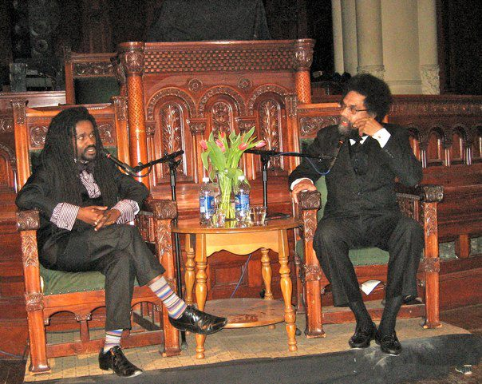

Dear Friends,
You are invited to two special events next week in New York City.
On Wednesday, October 1, Union Theological Seminary will host "Keeping Ferguson Alive!" from 5:30 to 7:30 PM.
FOR Freeman Fellow Rev. Osagyefo Uhuru Sekou will come directly from Ferguson, Missouri, where he has spent much of the past six weeks. Rev. Sekou will be joined by renowned public intellectual Dr. Cornel West as well as Union students who have also been in Ferguson.

This intergenerational dialogue on activism, experience, and transformation will consider questions such as: How do we today honor victims like Michael Brown, Rachael McBride,Yvette Smith, and Eric Garner so that they, like Emmett Till, did not die in vain? How do we keep the dialogue alive so that the legacy of beaten, broken, and murdered black bodies does not continue to occur?
Dr. West and Rev. Sekou will discuss the moral and sociological impacts of Michael Brown’s death, and Union seminarians Khadijah Abdul-Mateen, Aimme Rogers, Kendrick Kemp, and Foster J. Pinkney will unpack their experiences in Ferguson, their hopes for the future of activism and continue asking the question, “Where do we go from here?”
Union Theological Seminary is located at 3041 Broadway, with its main entrance at 121st Street in uptown Manhattan. Join FOR national staff at this very special event: preregistration is free but requested due to limited space.
On Sunday, October 5, St. Joseph’s Church in Greenwich Village will host "Ending U.S. War in Korea: from Armistice to Peace” from 2:30 to 4:30 PM.
John Kim, U.N. representative for the International Fellowship of Reconciliation and national coordinator of Veterans For Peace's Korea Peace Campaign, will be the featured speaker.
The fact that the Korean War has never officially ended is often forgotten, and this six-decade-conflict's interminable impact on Koreans and Americans, including the nuclear threat, will be a focus of this informative presentation.
The church is located at 371 Sixth Avenue, between Waverly and Washington Places in downtown Manhattan. Light refreshments will be served. The program is free but free-will contributions will be greatly appreciated. The event is co-sponsored by FOR, Pax Christi Metro New York, and the NYC chapter of Veterans For Peace.
We look forward to seeing you next week at these important events.
|